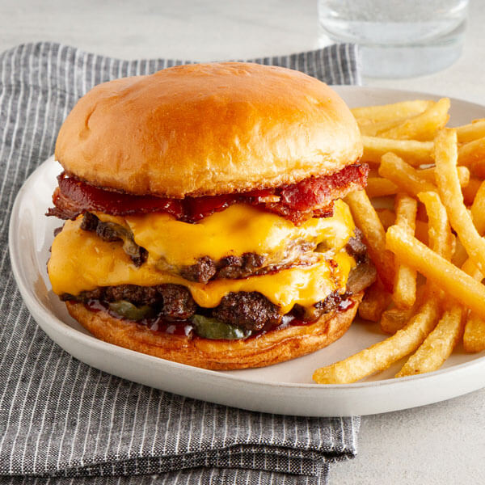

Double Cheese Burger

Ingredients
- 1 lb (450 g) ground beef (about 4 patties)
- Salt and freshly ground black pepper
- 4–8 slices cheddar cheese (2 per burger for double)
- 4 burger buns
- 2 tbsp butter (for toasting buns)
- Lettuce leaves
- 1 tomato, sliced
- 1 small red onion, sliced
- Pickle slices
- Ketchup
- Mustard
- Mayonnaise
Instructions
- Preheat your grill or skillet to medium-high heat.
- Divide the ground beef into 4 equal portions and shape into patties.
- Season both sides of the patties with salt and pepper.
- Cook the patties for about 3-4 minutes on one side.
- Flip the patties and place a slice of cheese on each patty.
- Cook for another 3-4 minutes until the cheese is melted and the patties are cooked through.
- Stack two patties together for each burger to make it a double.
- Toast the burger buns lightly on the grill or skillet.
- Assemble the burgers by placing the double patties on the bottom bun, then add your favorite toppings (lettuce, tomato, onion, pickles, sauces).
- Top with the other half of the bun and serve hot.
Back to Home